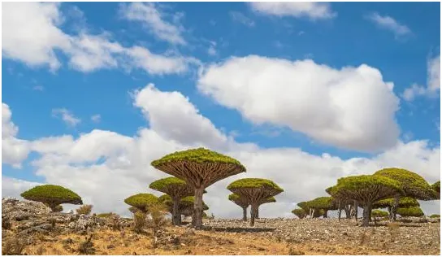
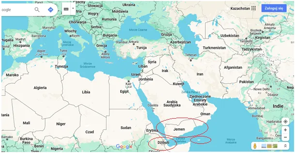
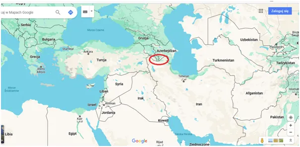

Czy Trzecią Wojnę Światową wygra Jemen? Konflikt z Palestyną rozlewa się na naszych oczach.
Jemen, to skrawek ziemi na południe od Arabii Saudyjskiej oraz malutki archipelag wysepek Sokotra u brzegów Afryki. To wejście z Oceanu Indyjskiego na Morze Czerwone. Dalej na północ mamy Kanał Sueski, bramę świata zachodniego dla tanich azjatyckich surowców i towarów. Malutki Jemen prowadzi wojnę z hegemonem światowym, z USA i Wielką Brytanią.

Oczywiście Jemen ma wsparcie Iranu i Chin, które mają swoją bazę wojskową po drugiej stronie cieśniny w afrykańskim malutkim Dżibuti. Stawka jest wysoka, chodzi o kontrolę nad najważniejszym wodnym szlaku świata. Chiny od dekad są pod presją ryzyka, że zamknięcie tego szlaku sparaliżuje ich eksport.

W odpowiedzi na taki szach uparcie budują szlak lądowy przez Azję Środkową. Udało się przesiedlić garstkę Ormian, z pogranicza z Iranem i trwa budowa drogi łączącej Azerbejdżan z Turcją. Dziś trzeba jechać do Azerskiego Baku przez góry Gruzji. Szlak przez Azję jest nie tylko linią transportową, ale głównie odradzającym się rynkiem wewnętrznym blisko miliarda ludzi poza Indiami i Chinami. Po 500 lat dominacji zachodu Azja odbudowuje Jedwabny Szlak.

Stawka jest wysoka i Jemen ostrzeliwuje z dużej odległości Izrael oraz lokalni "piraci" atakują zachodnie, a głównie izraelskie tankowce. Dzielnie ich bronią amerykańska i brytyjska flota bo światowy biznes naftowy jest wspólny. Dziś USA i Brytyjczycy uderzyli ciężkimi rakietami w miasta Jemenu, konflikt z Palestyny rozlewa się na naszych oczach. Mały Jemen jest pod presją całego świata arabskiego i potrzebuje symbolicznego sukcesu, choćby jednego trafienia w zachodni okręt, tymczasem systemy przechwytujące niszczą wszystkie rakiety wystrzelone z Jemenu. Jest w tej grze istotny element ceny zwycięstwa, każda rakieta, czy to zrobiona za kilkaset dolarów w Palestynie, czy w Jemenie wymaga użycia rakiet przechwytujących wartych dziesiątki, a nawet setki tysięcy dolarów. Wszystkie imperia upadały podobnie pod ciężarem swojej korupcji i demoralizacji. Zachód nie wykona np. desantu, bo każdy martwy "amerykański chłopiec" to przegrana w wyborach. Tymczasem 25 000 zabitych w Palestynie cywilów nie robi na "zachodniej opinii publicznej" wrażenia.
Paweł Klimczewski